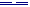
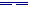
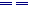

Es ist bei den Chinesen wie bei den Indern der Fall, daß sie einen großen Ruhm der Ausbildung haben, aber dieser sowohl wie die großen Zahlen ihrer Geschichte usf. haben sich durch bessere Kenntnis sehr herabgesetzt. Ihre große Ausbildung betrifft die Religion, Wissenschaft, Staatsverwaltung, Staatsverfassung, Poesie, das Technische von Künsten, den Handel usw. Wenn man aber die Staatsverfassung von China mit einer europäischen vergleicht, so kann dies nur geschehen in Ansehung des Formellen; der Inhalt ist sehr verschieden. Ebenso ist es, wenn man indische Poesie mit europäischer vergleicht. Sie ist zwar glänzend, reich, ausgebildet wie die irgendeines Volkes; der Inhalt der alten orientalischen Poesie, als bloßes Spiel der Phantasie betrachtet, erscheint von dieser Seite höchst glänzend; aber in der Poesie kommt es auf den Inhalt an, es wird Ernst damit. Selbst die Homerische Poesie ist für uns nicht Ernst, deshalb kann solche Poesie bei uns nicht entstehen; es ist nicht der Mangel an Genie - es gibt Genies derselben Größe -, aber der Inhalt kann nicht unser Inhalt sein. So kann auch die indische, orientalische Poesie der Form nach sehr entwickelt sein, aber der Inhalt bleibt innerhalb einer gewissen Grenze und kann uns nicht genügen. Bei den Rechtsinstitutionen, Staatsverfassungen usw. fühlt man sogleich, daß, wenn sie auch noch so konsequent formell ausgebildet sind, sie doch bei uns nicht stattfinden können, daß wir sie uns nicht würden gefallen lassen, daß sie statt Recht vielmehr eine Unterdrückung des Rechts sind. Dies ist zunächst eine allgemeine Bemerkung in Ansehung solcher Vergleichungen, insofern man sich durch die Form bestechen läßt, dergleichen dem Unsrigen gleichzusetzen oder gar vorzuziehen.
Das erste bei den Chinesen zu Bemerkende ist die Lehre des Konfutse, 500 Jahre vor Christi Geburt. Zu Leibniz' Zeiten hat die Philosophie des Konfuzius großes Aufsehen gemacht. Das ist Moralphilosophie. Seine Bücher sind bei den Chinesen die geehrtesten. Er hat Grundwerke, besonders geschichtliche, kommentiert. Seine anderen Arbeiten betreffen die Philosophie, es sind ebenfalls Kommentare zu älteren traditionellen Werken. Seine Ausbildung der Moral hat ihn indessen am berühmtesten gemacht; sie ist Autorität bei den Chinesen. Seine Lebensbeschreibung ist durch französische Missionare aus den chinesischen Originalwerken übersetzt. Hiernach hat er mit Thales ungefähr gleichzeitig gelebt. Er war eine Zeitlang Minister, ist dann in Ungnade gefallen, hat sein Amt verloren und unter seinen Freunden philosophierend gelebt, ist aber noch oft um Rat gefragt worden. Wir haben Unterredungen von Konfuzius mit seinen Schülern, es ist populäre Moral darin; diese finden wir allenthalben, in jedem Volke, und besser; es ist nichts Ausgezeichnetes. Konfuzius ist praktischer Weltweiser; spekulative Philosophie findet sich durchaus nicht bei ihm, nur gute, tüchtige, moralische Lehren, worin wir aber nichts Besonderes gewinnen können. Ciceros De officiis, ein moralisches Predigtbuch, gibt uns mehr und Besseres als alle Bücher des Konfutse. Aus seinen Originalwerken kann man das Urteil fällen, daß es für den Ruhm des Konfutse besser gewesen wäre, wenn sie nicht übersetzt worden wären.50)
Ein zweiter Umstand, der zu bemerken, ist, daß die Chinesen sich auch mit abstrakten Gedanken beschäftigt haben, mit reinen Kategorien. Das alte Buch Yi-king (Buch der Prinzipien) dient hierbei zur Grundlage; es enthält die Weisheit der Chinesen, und sein Ursprung wird dem Fohi zugeschrieben. Die Erzählung, die von ihm dort vorkommt, geht ganz ins Mythologische und Fabelhafte, ist sinnlos. Die Hauptsache ist, daß ihm die Erfindung einer Tafel mit gewissen Zeichen, Figuren (Ho-tu) zugeschrieben wird, die er auf dem Rücken eines Drachenpferdes, als es aus dem Flusse stieg, gesehen habe.51) Sie enthält Striche, neben- und übereinander, diese sind Symbole, haben eine gewisse Bedeutung; und die Chinesen sagen, diese Linien seien die Grundlage ihrer Buchstaben wie auch ihres Philosophierens. Diese Bedeutungen sind ganz abstrakte Kategorien, die abstraktesten und mithin die oberflächlichsten Verstandesbestimmungen. Es ist allerdings zu achten, daß die reinen Gedanken zum Bewußtsein gebracht sind; es ist aber nicht weit damit gegangen, es bleibt bei den oberflächlichsten Gedanken. Sie werden zwar konkret, aber dies Konkrete wird nicht begriffen, nicht spekulativ betrachtet, sondern aus der gewöhnlichen Vorstellung genommen und nach der Anschauung, der gewöhnlichen Wahrnehmung davon gesprochen, so daß in diesem Auflesen der konkreten Prinzipien nicht ein sinniges Auffassen der allgemeinen natürlichen oder geistigen Mächte zu finden ist. Der Kuriosität wegen will ich diese Grundlage näher angeben. Die zwei Grundfiguren sind eine horizontale Linie (, Yang) und der entzweigebrochene Strich, so groß wie die erste Linie (, Yin): das erste das Vollkommene, den Vater, das Männliche, die Einheit, wie bei den Pythagoreern, die Affirmation darstellend, das zweite das Unvollkommene, die Mutter, das Weibliche, die Zweiheit, die Negation. Diese Zeichen werden hochverehrt: sie seien die Prinzipien der Dinge. Sie werden weiter miteinander verbunden, zuerst zu zweien; so entstehen vier Figuren: ,

,
,
, der große Yang, der kleine Yang, der kleine Yin, der große Yin. Die Bedeutung dieser vier Bilder ist die Materie, die vollkommene und unvollkommene. Die zwei Yang sind die vollkommene Materie, und zwar der erste in der Bestimmung von jung und kräftig; der zweite ist dieselbe Materie, aber als alt und unkräftig. Das dritte und vierte Bild, wo der Yin zugrunde liegt, sind die unvollkommene Materie, welche wieder die zwei Bestimmungen jung und alt, Stärke und Schwäche hat.Diese Striche werden weiter zu dreien verbunden; so entstehen acht Figuren, diese heißen die Kua: , , , , , , , . (Weiter zu vieren verbunden geben diese Striche 64 Figuren, welche die Chinesen für den Ursprung aller ihrer Charaktere halten, indem man zu diesen geraden Linien senkrechte und krumme in verschiedenen Richtungen hinzufügte.) Ich will die Bedeutung dieser Kua angeben, um zu zeigen, wie oberflächlich sie ist. Das erste Zeichen, den großen Yang und den Yang in sich enthaltend, ist der Himmel (Thien), der alles durchdringende Äther. (Der Himmel ist den Chinesen das Höchste, und es ist ein großer Streit unter den Missionaren gewesen, ob sie den christlichen Gott Thien nennen sollten oder nicht.) Das zweite Zeichen ist das reine Wasser (Tui), das dritte reines Feuer (Li), das vierte der Donner (Tschin), das fünfte der Wind (Siun), das sechste gemeines Wasser (Kan), das siebente die Berge (Ken), das achte die Erde (Kuen). Wir würden Himmel, Donner, Wind und Berge nicht in die gleiche Linie stellen. Man kann also hier eine philosophische Entstehung aller Dinge aus diesen abstrakten Gedanken der absoluten Einheit und Zweiheit finden. Den Vorteil haben alle Symbole, Gedanken anzudeuten und die Meinung zu erwecken, sie seien also auch dagewesen. So fängt man mit Gedanken an, hernach geht's in die Berge; mit dem Philosophieren ist es sogleich aus.52)
Im Schu-king ist auch ein Kapitel über die chinesische Weisheit, wo die fünf Elemente vorkommen, aus denen alles gemacht sei: Feuer, Wasser, Holz, Metall, Erde. Das steht kunterbunt untereinander. Die erste Regel des Gesetzes ist im Schu-king, daß man die fünf Elemente nenne, die zweite die Aufmerksamkeit darauf. Auch diese würden wir ebensowenig als Prinzipien gelten lassen. Die allgemeine Abstraktion geht also bei den Chinesen fort zum Konkreten, obgleich nur nach äußerlicher Ordnung und ohne etwas Sinniges zu enthalten. Dies ist die Grundlage aller chinesischen Weisheit und alles chinesischen Studiums.
Dann gibt es aber noch eine eigentliche Sekte, die der Taosse, deren Anhänger nicht Mandarine und an die Staatsreligion angeschlossen, auch nicht Buddhisten, nicht lamaischer Religion sind. Der Urheber dieser Philosophie und der damit eng verbundenen Lebensweise ist Lao-tse (geboren am Ende des 7. Jahrhunderts vor Christus), älter als Konfuzius, da dieser mehr politische Weise zu ihm reiste, um sich bei ihm Rats zu erholen. Das Buch des Lao-tse, Tao-te-king, wird zwar nicht zu den eigentlichen Kings gerechnet, hat auch nicht die Autorität dieser; es ist aber doch ein Hauptwerk bei den Tao-sse (Anhänger der Vernunft; ihre Lebensweise, Tao-Tao: Richtung, Gesetz der Vernunft). Ihr Leben widmen sie dem Studium der Vernunft und versichern dann, daß derjenige, der die Vernunft in ihrem Grunde erkenne, die ganz allgemeine Wissenschaft, allgemeine Heilmittel und die Tugend besitze, daß er eine übernatürliche Gewalt erlangt habe, sich in den Himmel erheben, daß er fliegen könne und nicht sterbe.53)
Von Lao-tse selbst sagen seine Anhänger, er sei Buddha, der als Mensch immerfort existierende Gott geworden. Die Hauptschrift von ihm haben wir noch, und in Wien ist sie übersetzt worden; ich habe sie selbst da gesehen. Eine Hauptstelle ist besonders häufig ausgezogen: "Ohne Namen ist Tao das Prinzip des Himmels und der Erde; mit dem Namen ist es die Mutter des Universums. Mit Leidenschaften betrachtet man sie nur in ihrem unvollkommenen Zustande; wer sie erkennen will, muß ohne Leidenschaft sein." Abel Rémusat sagt, am besten würde sie sich im Griechischen ausdrücken lassen: λόγος. Aber was finden wir in diesem allem Belehrendes?
Die berühmte Stelle, die von den Älteren oft ausgezogen ist, ist diese: "Die Vernunft hat das Eine hervorgebracht; das Eine hat die Zwei hervorgebracht; und die Zwei hat die Drei hervorgebracht; und die Drei produziert die ganze Welt." (Anspielung auf die Dreieinigkeit hat man darin finden wollen.) "Das Universum ruht auf dem dunkeln Prinzip; das Universum umfaßt das helle Prinzip" (oder auch: es wird von dem Äther umfaßt; so kann man es umkehren, da die chinesische Sprache keine Bezeichnung des Kasus hat, die Worte vielmehr bloß nebeneinanderstehen).54)
Eine andere Stelle55) : "Derjenige, den ihr betrachtet und den ihr nicht seht - er nennt sich I; und du hörst ihn und hörst ihn nicht - und er heißt Hi; du suchst ihn mit der Hand und erreichst ihn nicht - und sein Name ist Weï. Du gehst ihm entgegen und siehst sein Haupt nicht; du gehst hinter ihm und siehst seinen Rücken nicht." Diese Unterschiede heißen "die Verkettung der Vernunft". Man hat natürlich bei der Anführung dieser Stelle an יהדה und an den afrikanischen Königsnamen Juba erinnert, auch an Iovis. Dieses I-hi-weï oder I-H-W weiter bedeute einen absoluten Abgrund56) und das Nichts: das Höchste, das Letzte, das Ursprüngliche, das Erste, der Ursprung aller Dinge ist das Nichts, das Leere, das ganz Unbestimmte (das abstrakt Allgemeine); es wird auch Tao, die Vernunft, genannt. Wenn die Griechen sagen, das Absolute ist das Eine, oder die Neueren, es ist das höchste Wesen, so sind auch hier alle Bestimmungen getilgt, und mit dem bloßen abstrakten Wesen hat man nichts als diese selbe Negation, nur affirmativ ausgesprochen. Ist das Philosophieren nun nicht weiter gekommen als zu solchen Ausdrücken, so steht es auf der ersten Stufe.